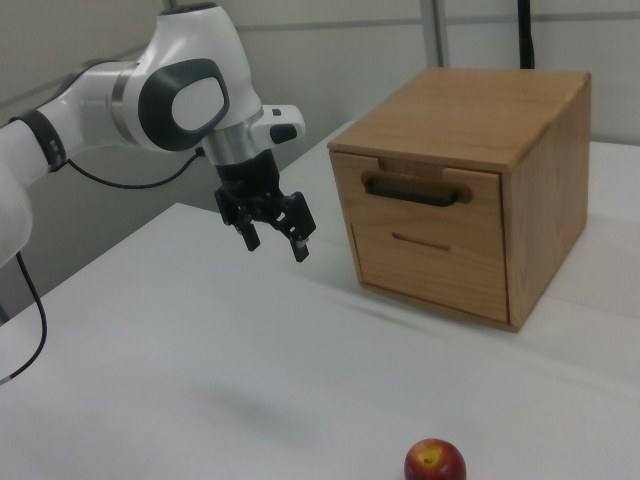

RoboMIND · franka_3rgb__pick_apple_into_drawer/0923_164743
Pick apple into drawer

Annotation
From the dedicated visual review of this video (concise_action_v1). Plain text · JSON
Observed outcome
- Status
visually_completed
- Description
The top drawer starts closed (frames 0-136), the gripper holds its handle (closing at about frames 100-130), the drawer is pulled out toward the camera and image left (about frames 138-170) to a partly open position that then stays constant, the gripper opens (about frames 185-200) and lifts off the handle (about 196-209). The drawer remains open and empty; the apple is untouched on the table through frame 209. The gripper is still close to the open drawer's front edge at frame 209, not far away.
Hand roles
- Active visible arm
Single arm grips the top drawer handle and pulls the drawer open, releases and lifts off; later picks up the apple, places it in the drawer and pushes the drawer closed.
- Other arm
None.
Coordination
Single arm acts alone; no second arm, hand transfer or human interaction.
Robot-side evidence
- Visible description
Single Franka Emika Panda arm with a parallel-jaw gripper; its base is off-frame to image left and the arm enters from the left edge in the camera_right view, reaching toward the drawer cabinet on the right. Only one arm exists.
- Source annotation
No publisher language instruction (task_prompt.txt) exists for this episode; the task name comes only from the folder name.
- Visual certainty
Not a humanoid or dual-arm robot; left/right anatomy is not needed. The prompts refer to the single visible robotic arm.
Chronology
| Frames | Observation |
|---|---|
| 0–20 | Arm held above the table at left of the wooden two-drawer cabinet with gripper open; red apple on the table at the bottom edge of the image; drawers closed. |
| 22–60 | Arm swings toward the cabinet; the gripper moves in front of the top drawer handle (blue wrist light visible from about frame 50). |
| 62–100 | Arm extends and the gripper reaches the top drawer handle; at frame 104 the gripper is at the handle with the drawer still closed. |
| 100–130 | Gripper closes on the handle (telemetry gripper value rises from 0.01 at frame 100 to 0.83 at frame 130); drawer still closed at frames 128 and 136. |
| 138–170 | Arm pulls back toward image left and the top drawer slides out toward the camera; clearly open at frame 144 and at its final extension by about frame 168-170. |
| 172–184 | Drawer stays open and static; the gripper still holds the handle. |
| 185–209 | Gripper value falls from 0.83 (frame 180) to about 0.08 (frame 200) as the fingers open; the gripper lifts off the handle (frames 190-206) while staying near the drawer front. Selected clip ends at frame 209, before the arm base swings toward the apple. |
| 210–240 | Arm swings left and down toward the apple on the table (frames 216-236 viewed). |
| 242–288 | Gripper lowers over the apple; telemetry gripper value rises to about 0.1 at frame 290, consistent with closing on the apple (frame 290 viewed: gripper at the apple). |
| 290–360 | Apple held in the gripper (frame 330 viewed), lifted and carried up and right to the open drawer. |
| 360–392 | Apple held over the open drawer and lowered into it (frame 388 viewed); gripper value falls to 0 at about frame 390. |
| 394–430 | Apple rests inside the open drawer (frame 396 viewed); gripper withdraws up and to the left. |
| 430–470 | Gripper returns to the front of the drawer near the handle and closes (telemetry 0.18 at 430, 0.99 from 450); apple still visible in the open drawer (frames 440, 476 viewed). |
| 472–490 | Arm pushes the drawer in; drawer closed by about frame 486-490 (frame 486 viewed: nearly closed), apple no longer visible. |
| 490–540 | Gripper stays at the closed drawer handle, then the arm begins to retract. |
| 540–599 | Gripper opens (telemetry falls from about 540 to 0 by 560); arm withdraws up and left and settles near the starting pose above the table; drawer closed, table clear. |
Clip selection
The episode contains three independent subtasks (open the top drawer, move the apple into the drawer, push the drawer closed). The first complete meaningful manipulation is opening the top drawer: the gripper closes on the handle, pulls the drawer out, opens to release the handle (gripper telemetry falls from 0.83 at frame 180 to about 0.08 at frame 200) and lifts off it. The selection ends at frame 209, a few frames after the release and before the arm base swings toward the apple (joint 0 starts changing at about frame 205-210; the descent toward the apple is visible from about frame 216). The apple is untouched on the table throughout.
Differences from the publisher annotation
- There is no publisher language instruction for this episode; the task name 'pick_apple_into_drawer' comes only from the folder name.
- The folder name describes picking the apple into the drawer, but the video also contains opening the drawer first and pushing it closed after placement. The selected shorter clip covers only the drawer opening; the full-sequence prompt covers all three phases.
Uncertainties
- Whether the closed gripper holds the handle bar by pinching or hooking behind it is not resolvable at this resolution; the prompt uses 'grasps the handle' based on the gripper telemetry rising and the drawer following the gripper.
- The boundary at frame 210 is a judgement: the gripper only gradually lifts off the handle (frames 190-206) and stays near the drawer front until about frame 216, while the arm base swing toward the apple starts at about frame 205-210; the selected clip ends at the start of that swing.
- The apple's presence inside the closed drawer at the end is inferred (seen inside until closure, never seen leaving), not directly visible.
- FPS is not recorded in the source; frame indices are authoritative, not time.
- Gripper telemetry polarity (higher value = more closed) was inferred from video and used only as supporting evidence.
Complete review record action_review.json
{
"prompt_protocol": "concise_action_v1",
"prompt_provenance": "visually_authored_from_video_and_initial_frame",
"dataset": "x-humanoid-robomind/RoboMIND",
"task": "pick_apple_into_drawer",
"episode_id": "0923_164743",
"source_video": "../../original/data/trajectory.hdf5",
"generation_camera": "camera_right",
"source_frame_count": 600,
"source_resolution": [
640,
480
],
"source_fps": null,
"source_fps_note": "FPS is not recorded in the source HDF5; 30 FPS is only a nominal playback rate, so no real-time durations are claimed.",
"selected_source_frame_start": 0,
"selected_source_frame_end_exclusive": 210,
"selected_frame_count": 210,
"selection_reason": "The episode contains three independent subtasks (open the top drawer, move the apple into the drawer, push the drawer closed). The first complete meaningful manipulation is opening the top drawer: the gripper closes on the handle, pulls the drawer out, opens to release the handle (gripper telemetry falls from 0.83 at frame 180 to about 0.08 at frame 200) and lifts off it. The selection ends at frame 209, a few frames after the release and before the arm base swings toward the apple (joint 0 starts changing at about frame 205-210; the descent toward the apple is visible from about frame 216). The apple is untouched on the table throughout.",
"usable_prompt": "The robotic arm grasps the handle of the top drawer, pulls the drawer open, then releases the handle and lifts clear. Keep the camera fixed; preserve robot geometry, physically valid joint motion, and normal gripper opening and closing.",
"full_sequence_prompt": "The robotic arm grasps the top drawer handle and pulls the drawer open, then picks up the red apple, places it inside the open drawer, and pushes the drawer closed. Keep the camera fixed; preserve robot geometry, physically valid joint motion, and normal gripper opening and closing.",
"selected_action_outcome": {
"status": "visually_completed",
"description": "The top drawer starts closed (frames 0-136), the gripper holds its handle (closing at about frames 100-130), the drawer is pulled out toward the camera and image left (about frames 138-170) to a partly open position that then stays constant, the gripper opens (about frames 185-200) and lifts off the handle (about 196-209). The drawer remains open and empty; the apple is untouched on the table through frame 209. The gripper is still close to the open drawer's front edge at frame 209, not far away."
},
"source_overall_outcome": {
"status": "visually_completed",
"source_quality_label": null,
"description": "After opening the drawer, the arm swings to the apple (about frames 210-250), lowers over it and closes the gripper (telemetry about 0.1 from frame 290), lifts and carries it (about 300-360), lowers it into the open drawer and releases it (apple resting in the drawer by about frame 392-396), withdraws up and left, returns to the handle (about 430-470) and pushes the drawer closed (closed by about frame 486-490). The gripper then opens (telemetry falls from about frame 540) and the arm withdraws to near its start pose by about frame 560-599. The apple is no longer visible at the end; it is inferred to remain in the closed drawer because it was seen in the drawer until closure and never seen leaving."
},
"anatomical_side_evidence": {
"visible_description": "Single Franka Emika Panda arm with a parallel-jaw gripper; its base is off-frame to image left and the arm enters from the left edge in the camera_right view, reaching toward the drawer cabinet on the right. Only one arm exists.",
"source_annotation": "No publisher language instruction (task_prompt.txt) exists for this episode; the task name comes only from the folder name.",
"visual_certainty": "Not a humanoid or dual-arm robot; left/right anatomy is not needed. The prompts refer to the single visible robotic arm."
},
"arm_roles": {
"active_visible_arm": "Single arm grips the top drawer handle and pulls the drawer open, releases and lifts off; later picks up the apple, places it in the drawer and pushes the drawer closed.",
"other_arm": "None."
},
"coordination": "Single arm acts alone; no second arm, hand transfer or human interaction.",
"chronology": [
{
"source_frames_inclusive": [
0,
20
],
"observation": "Arm held above the table at left of the wooden two-drawer cabinet with gripper open; red apple on the table at the bottom edge of the image; drawers closed."
},
{
"source_frames_inclusive": [
22,
60
],
"observation": "Arm swings toward the cabinet; the gripper moves in front of the top drawer handle (blue wrist light visible from about frame 50)."
},
{
"source_frames_inclusive": [
62,
100
],
"observation": "Arm extends and the gripper reaches the top drawer handle; at frame 104 the gripper is at the handle with the drawer still closed."
},
{
"source_frames_inclusive": [
100,
130
],
"observation": "Gripper closes on the handle (telemetry gripper value rises from 0.01 at frame 100 to 0.83 at frame 130); drawer still closed at frames 128 and 136."
},
{
"source_frames_inclusive": [
138,
170
],
"observation": "Arm pulls back toward image left and the top drawer slides out toward the camera; clearly open at frame 144 and at its final extension by about frame 168-170."
},
{
"source_frames_inclusive": [
172,
184
],
"observation": "Drawer stays open and static; the gripper still holds the handle."
},
{
"source_frames_inclusive": [
185,
209
],
"observation": "Gripper value falls from 0.83 (frame 180) to about 0.08 (frame 200) as the fingers open; the gripper lifts off the handle (frames 190-206) while staying near the drawer front. Selected clip ends at frame 209, before the arm base swings toward the apple."
},
{
"source_frames_inclusive": [
210,
240
],
"observation": "Arm swings left and down toward the apple on the table (frames 216-236 viewed)."
},
{
"source_frames_inclusive": [
242,
288
],
"observation": "Gripper lowers over the apple; telemetry gripper value rises to about 0.1 at frame 290, consistent with closing on the apple (frame 290 viewed: gripper at the apple)."
},
{
"source_frames_inclusive": [
290,
360
],
"observation": "Apple held in the gripper (frame 330 viewed), lifted and carried up and right to the open drawer."
},
{
"source_frames_inclusive": [
360,
392
],
"observation": "Apple held over the open drawer and lowered into it (frame 388 viewed); gripper value falls to 0 at about frame 390."
},
{
"source_frames_inclusive": [
394,
430
],
"observation": "Apple rests inside the open drawer (frame 396 viewed); gripper withdraws up and to the left."
},
{
"source_frames_inclusive": [
430,
470
],
"observation": "Gripper returns to the front of the drawer near the handle and closes (telemetry 0.18 at 430, 0.99 from 450); apple still visible in the open drawer (frames 440, 476 viewed)."
},
{
"source_frames_inclusive": [
472,
490
],
"observation": "Arm pushes the drawer in; drawer closed by about frame 486-490 (frame 486 viewed: nearly closed), apple no longer visible."
},
{
"source_frames_inclusive": [
490,
540
],
"observation": "Gripper stays at the closed drawer handle, then the arm begins to retract."
},
{
"source_frames_inclusive": [
540,
599
],
"observation": "Gripper opens (telemetry falls from about 540 to 0 by 560); arm withdraws up and left and settles near the starting pose above the table; drawer closed, table clear."
}
],
"uncertainties": [
"Whether the closed gripper holds the handle bar by pinching or hooking behind it is not resolvable at this resolution; the prompt uses 'grasps the handle' based on the gripper telemetry rising and the drawer following the gripper.",
"The boundary at frame 210 is a judgement: the gripper only gradually lifts off the handle (frames 190-206) and stays near the drawer front until about frame 216, while the arm base swing toward the apple starts at about frame 205-210; the selected clip ends at the start of that swing.",
"The apple's presence inside the closed drawer at the end is inferred (seen inside until closure, never seen leaving), not directly visible.",
"FPS is not recorded in the source; frame indices are authoritative, not time.",
"Gripper telemetry polarity (higher value = more closed) was inferred from video and used only as supporting evidence."
],
"source_annotation_discrepancies": [
"There is no publisher language instruction for this episode; the task name 'pick_apple_into_drawer' comes only from the folder name.",
"The folder name describes picking the apple into the drawer, but the video also contains opening the drawer first and pushing it closed after placement. The selected shorter clip covers only the drawer opening; the full-sequence prompt covers all three phases."
],
"inspection_coverage": {
"entire_sequence_reviewed": true,
"sampled_decoded_frame_indices": [
0,
2,
4,
6,
8,
10,
12,
14,
16,
18,
20,
22,
24,
26,
28,
30,
32,
34,
36,
38,
40,
42,
44,
46,
48,
50,
52,
54,
56,
58,
60,
62,
64,
66,
68,
70,
72,
74,
76,
78,
80,
82,
84,
86,
88,
90,
92,
94,
96,
98,
100,
102,
104,
106,
108,
110,
112,
114,
116,
118,
120,
122,
124,
126,
128,
130,
132,
134,
136,
138,
140,
142,
144,
146,
148,
150,
152,
154,
156,
158,
160,
162,
164,
166,
168,
170,
172,
174,
176,
178,
180,
182,
184,
186,
188,
190,
192,
194,
196,
198,
200,
202,
204,
206,
208,
210,
212,
214,
216,
218,
220,
222,
224,
226,
228,
230,
232,
234,
236,
238,
240,
242,
244,
246,
248,
250,
252,
254,
256,
258,
260,
262,
264,
266,
268,
270,
272,
274,
276,
278,
280,
282,
284,
286,
288,
290,
292,
294,
296,
298,
300,
302,
304,
306,
308,
310,
312,
314,
316,
318,
320,
322,
324,
326,
328,
330,
332,
334,
336,
338,
340,
342,
344,
346,
348,
350,
352,
354,
356,
358,
360,
362,
364,
366,
368,
370,
372,
374,
376,
378,
380,
382,
384,
386,
388,
390,
392,
394,
396,
398,
400,
402,
404,
406,
408,
410,
412,
414,
416,
418,
420,
422,
424,
426,
428,
430,
432,
434,
436,
438,
440,
442,
444,
446,
448,
450,
452,
454,
456,
458,
460,
462,
464,
466,
468,
470,
472,
474,
476,
478,
480,
482,
484,
486,
488,
490,
492,
494,
496,
498,
500,
502,
504,
506,
508,
510,
512,
514,
516,
518,
520,
522,
524,
526,
528,
530,
532,
534,
536,
538,
540,
542,
544,
546,
548,
550,
552,
554,
556,
558,
560,
562,
564,
566,
568,
570,
572,
574,
576,
578,
580,
582,
584,
586,
588,
590,
592,
594,
596,
598
],
"sampling_method": "Every second decoded frame of camera_right (frames 0-598) in sequential temporary contact sheets covering the complete 600-frame source, plus native-resolution crops/frames at the transitions and the boundary.",
"native_resolution_frame_indices": [
104,
128,
136,
144,
168,
184,
188,
190,
192,
196,
200,
202,
204,
206,
208,
210,
212,
214,
216,
222,
228,
236,
290,
330,
388,
396,
440,
476,
486
],
"conditioning_png_inspected_after_sequence": true,
"conditioning_png": "../first_frame.png",
"temporary_evidence_location": "/tmp/rm_review_franka_3rgb__pick_apple_into_drawer_0923_164743 (not a dataset artifact)",
"ancillary_camera_videos_used": false,
"telemetry_used": "puppet/joint_position (7 joints plus gripper column) sampled every 10 frames as supporting evidence only."
},
"generation_reference_validation": {
"source_frame_start": 0,
"source_frame_end_exclusive": 210,
"frame_count": 210,
"lossless_source_frame_correspondence_passed": true,
"original_source_hdf5_retained_unchanged": true
}
}